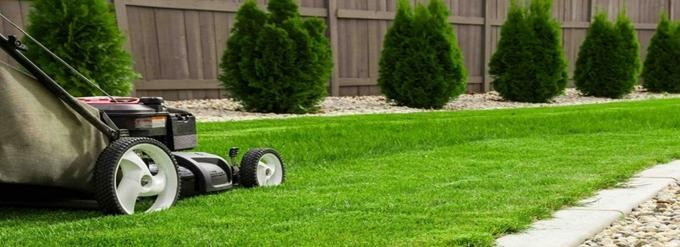
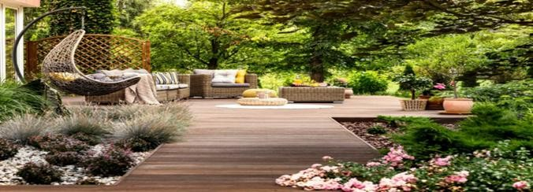
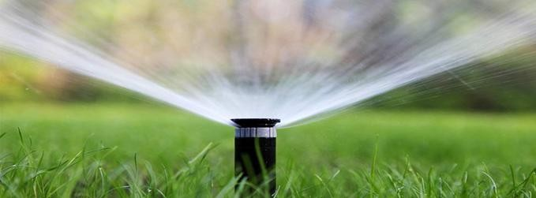

Cele mai bune sfaturi de la grădinarii pricepuți
1.Primul pas este curățarea temeinică a solului și eliminarea pe cât posibil a tuturor rădăcinilor plantelor dăunătoare și a buruienilor.
Poți să folosești erbicide. Cosește și taie, tunde sau scoate, cu tot cu rădăcină, tot ceea ce are tendința să prolifereze necontrolat.
Poți renunța, dacă vrei, și la plantele care cer o atenție deosebită.
2. Parcelează terenul. Arbuștii trebuie plasați spre gardul grădinii, în zonele mai îndepărtate,
florile pot avea una sau mai multe zone, simetrice sau nu, aproape de casă, dar fără să incomodeze locurile de trecere.
Pomii trebuie plantați astfel încât, prin creșterea rădăcinilor să nu afecteze fundația, iar ramurile să nu fie prea aproape de casă.
Distanța ideală este de patru-cinci metri. În felul acesta, vei beneficia doar de avantajul umbrei, fără alte complicații. Nucii, brazii,
salcia, teii și salcâmii se plantează departe de casă, la cel puțin 10 - 15 metri.
3. Stabilește alei în grădină și locul de relaxare, unde poți construi un foișor ori poți fixa un
cort de grădină sau o zonă cu scaune de exterior și umbrele, dar și grătarul.
4. Nivelează terenul, pe cât posibil. Astfel, eviți formarea bălților. Investește în calitatea solului.
Un sol bogat susține dezvoltarea plantelor fără să fie nevoie de udări repetate, de fertilizare și alte îngrijiri suplimentare.
5. Plantează un gard viu, care să delimiteze zonele din grădină sau să dubleze gardul proprietății.
Funcționează ca o barieră eficientă pentru praf, zgomot și priviri indiscrete și dă un aer îngrijit grădinii.
6. Însămânțează gazon sau trifoi. Acesta din urmă este mult mai ușor de întreținut, nu crește foarte înalt,
nu trebuie cosit decât de două, maximum trei ori, în timpul perioadei de vegetație, blochează dezvoltarea buruienilor și se păstrează frumos ani în șir.

7. Alege flori de curte rezistente și perene, care să înflorească în perioade diferite din an.
Selectează-le pe cele cu viață lungă, ce formează tufe și plantează-le în locul potrivit, în funcție de sol și lumină.
8. Folosește tehnica de mulcire a solului, care previne apariția buruienilor. Folosește mulci organic, făcut din coajă de copac,
compost sau frunze, care se descompune lent și îngrașă solul. Vei avea o grădină ordonată, cu un aspect mai unificat.
9. Utilizează ghivece mari, în care să pui plante aromatice sau cu frunze cerate. Sunt decorative, practice și dau un aspect foarte îngrijit.
10. Amenajează în grădină un loc de joacă. Poate să fie o poartă pentru baschet (cimentează un pătrat cu latura între 3 și 5 metri), un leagăn sau o trambulină. Grădina trebuie să fie un loc practic!

11. Asigură-te că ai un sistem de irigații pentru grădina ta. Dacă nu ai o sursă de apă care să-ți ușureze misiunea, merită să investești în așa ceva.
Sapă o fântână, montează o pompă care să aducă apa la suprafață și nu vei mai fi nevoit să stai la mila naturii.

Îngrijirea grădinii în funcție de sezon
În fiecare perioadă din an grădina are nevoie de puțină atenție specifică. O grădină deja amenajată pe principiul celor de care nu trebuie să ai multă grijă
se pliază perfect pe acest plan, pentru fiecare anotimp:
Primăvara
1.Curăță grădina de uscături și crengi;
2. Tunde arbuștii pentru a le da un aspect nou și a stimula creșterea și înflorirea, dar numai dacă este cazul;
3. Aplică fertilizator pentru plante și arbuști. Ploile de primăvară duc substanțele în sol foarte eficient;
4.Folosește erbicid, acolo unde apar buruienile;
5.Taie și curăță arborii ornamentali, înainte de umflarea mugurilor;
6.Seamănă gazon sau trifoi;
7.Taie tufele de trandafiri (dar nu pe cei cățărători, care trebuie doar bine curățați);
8.Plantează pomii și arbuștii (la finele lui februarie);
9.Plantează plantele pentru flori (ideal la mijlocul lui aprilie);
10.Tunde gardul viu cu frunze veșnic verzi (la finele lui martie).
Vara
1.Tunde și îngrijește gazonul, iarba sau trifoiul;
2.Udă grădina, când și dacă este cazul;
3.Plantează flori anuale.
Toamna
1.Curăță grădina de resturile vegetale din timpul verii;
2.Taie trandafirii (la finalul lui noiembrie);
3.Protejează lemnul, pune la adăpost mobilierul de grădină;
4.Culege roade, dacă ai pomi sau arbuști fructiferi;
5.Adună frunzele și, dacă este cazul, mai tunde iarba din curte.
Iarna
1.Îndepărtează zăpada de pe ramurile pomilor și arbuștilor, dar și de pe gardul viu, dacă este prea multă sau apoasă, pentru a nu rupe crengile;
2.Protejează plantele mai sensibile dacă este foarte frig;
3.Dacă iarna este blândă, în decembrie poți planta pomi și arbuști.